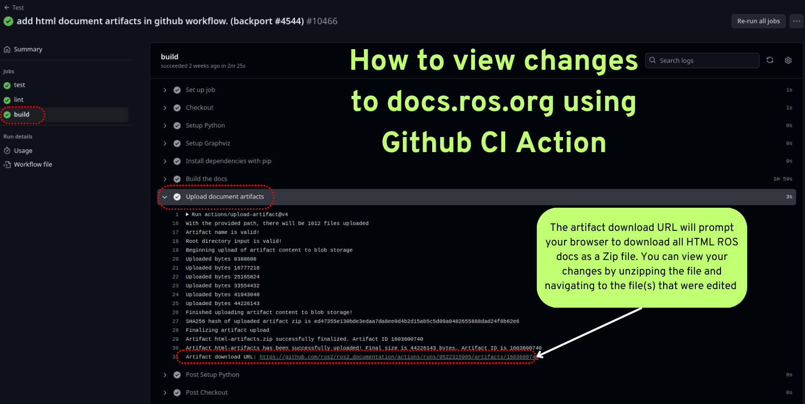
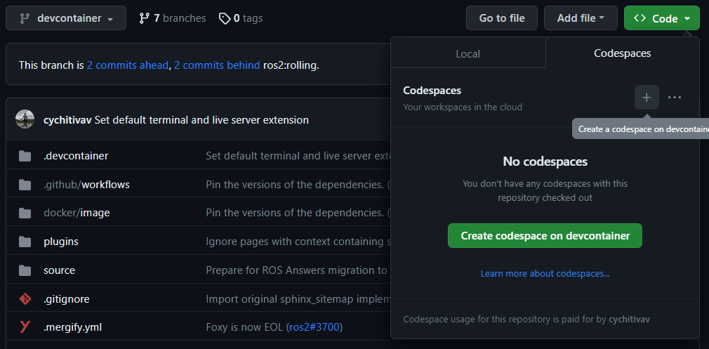

備註
您正在閱讀 ROS 2 的舊版但仍然受支援的文件。對於最新版本的資訊，請參見 Kilted。
Contributing to ROS 2 Documentation
Contributions to this site are most welcome. This page explains how to contribute to ROS 2 Documentation. Please be sure to read the below sections carefully before contributing.
The site is built using Sphinx, and more particularly using Sphinx multiversion.
Branch structure
The source code of documentation is located in the ROS 2 Documentation GitHub repository.
This repository is set up with one branch per ROS 2 distribution to handle differences between the distributions.
If a change is common to all ROS 2 distributions, it should be made to the rolling branch (and then will be backported as appropriate).
If a change is specific to a particular ROS 2 distribution, it should be made to the respective branch.
Source structure
The source files for the site are all located under the source subdirectory.
Templates for various sphinx plugins are located under source/_templates.
The root directory contains configuration and files required to locally build the site for testing.
Building the site locally
Start by creating venv to build the documentation:
$ python3 -m venv ros2doc # create venv
$ source ros2doc/bin/activate # activate venv
And install requirements located in the requirements.txt file:
$ pip install -r requirements.txt -c constraints.txt
$ pip install -r requirements.txt -c constraints.txt
$ python -m pip install -r requirements.txt -c constraints.txt
In order for Sphinx to be able to generate diagrams, the dot command must be available.
$ sudo apt update ; sudo apt install graphviz
$ brew install graphviz
Download an installer from the Graphviz Download page and install it.
Make sure to allow the installer to add it to the Windows %PATH%, otherwise Sphinx will not be able to find it.
Building the site for one branch
To build the site for just this branch, type make html at the top-level of the repository.
This is the recommended way to test out local changes.
$ make html
The build process can take some time.
To see the output, open build/html/index.html in your browser.
Checking / Testing the site
You can run the documentation tests locally (using doc8) with the following command:
$ make test
You can run the Python documentation tools tests locally (using pytest) with the following command:
$ make test-tools
You can run the Python documentation tools tests locally (using pytest) with the following command:
make test-tools
You can run the documentation linter locally (using sphinx-lint) with the following command:
$ make lint
You can run the documentation spell checker locally (using codespell) with the following command:
$ make spellcheck
備註
If that detects specific words that need to be ignored, add it to codespell_whitelist .
To know more about spelling checks, refer to Spelling check
View Site Through Github CI
For small changes to the ROS 2 Docs you can view your changes as rendered HTML using artifacts generated in our Github Actions. The "build" action produces the entire ROS Docs as a downloadable Zip file that contains all HTML for docs.ros.org This build action is triggered after passing the test action and lint action.
To download and view your changes first go to your pull request and under the title click the "Checks" tab. On the left hand side of the checks page, click on the "Test" section under the "tests" section click on "build" dialog. This will open a menu on the right, where you can click on "Upload document artifacts" and scroll to the bottom to see the download link for the Zipped' HTML files under the heading "Artifact download URL".
{kind=link}
Building the site for all branches
To build the site for all branches, type make multiversion from the rolling branch.
This has two drawbacks:
The multiversion plugin doesn't understand how to do incremental builds, so it always rebuilds everything. This can be slow.
When typing
make multiversion, it will always check out exactly the branches listed in theconf.pyfile. That means that local changes will not be shown.
To show local changes in the multiversion output, you must first commit the changes to a local branch.
Then you must edit the conf.py file and change the smv_branch_whitelist variable to point to your branch.
Checking for broken links
To check for broken links on the site, run:
$ make linkcheck
This will check the entire site for broken links, and output the results to the screen and build/linkcheck.
Spelling check
The make spellcheck command scans the documentation files and flags any misspellings.
If errors are detected, review the suggestions and update the pull request as necessary.
Some words, such as technical terms or proper nouns, maybe mistakenly flagged as misspelled. If you encounter such instances, you can add them to the ignore list to prevent them from being flagged in the future. To do this, add it to the codespell_whitelist file as follows:
empy
jupyter
lets
ws
To include custom corrections that codespell should apply, you can add them to the codespell_dictionary file as follows:
amnet->ament
colcn->colcon
rosabg->rosbag
rosdistroy->rosdistro
To check the dictionaries, you can run the make check-dictionaries command.
This will check the blank lines and leading/trailing spaces in the dictionaries.
If it complains about the dictionaries, you can run the make sort-dictionaries command.
This command will automatically modify the dictionaries if any issues are found.
Migrating Pages from the ROS Wiki
The first step in migrating a page from the ROS Wiki to the ROS 2 documentation is to determine if the page needs to be migrated. Check if the content, or something similar, is available on https://docs.ros.org/en/rolling by searching for related terms. If it has already been migrated, congratulations! You are done. If it hasn't been migrated, then consider whether it is worth keeping. Pages that you or others find useful, and refer to regularly, are good candidates assuming they have not been superseded by other documentation. Pages for ROS projects and features that are no longer supported by a current distribution should not be migrated.
The next step for migrating a ROS Wiki page is to determine the correct location for the migrated page. Only ROS Wiki pages that cover core ROS concepts belong in the ROS Documentation, these pages should be migrated to a logical location within the ROS documentation. Package specific documentation should be migrated to the package-level documentation generated in the package's source repository. Once the package level documentation has been updated it will be visible as part of the package-level documentation. If you are unsure whether and where to migrate a page, please get in touch via an issue on https://github.com/ros2/ros2_documentation or on https://discourse.ros.org.
Once you've determined that a ROS Wiki page is worth migrating, and found an appropriate landing spot in the ROS documentation, the next step in the migration process is to set up the conversion tools necessary to migrate the page. In most cases the only tools necessary to migrate a single ROS Wiki page to the ROS Docs are the PanDoc command line tool and a text editor. PanDoc is supported by most modern operating systems using the installation instruction found on their website. It is worth noting that the ROS Wiki uses an older wiki technology (MoinMoin), so the markup language used is an obscure dialect of the MediaWiki format. We've found that the easiest way to migrate a page from the ROS Wiki is to convert it from HTML into reStructured text using PanDoc.
Migrating a Wiki File
Clone the appropriate repository. If you are migrating a page to the official documentation hosted here, then you should clone https://github.com/ros2/ros2_documentation.
Create a new Github branch for your migrated page. We suggest something like
pagename-migration.Download the appropriate ROS Wiki page to an html file using wget or a similar tool (e.g.
wget -O urdf.html https://wiki.ros.org/urdf). Alternatively you can use your web browser to save the page's HTML.Next you need to remove the extraneous HTML in the file you downloaded Using your browser's developer mode, find the name of the first useful HTML element in the Wiki page. In most cases all of the HTML between the third line of the file, starting with the
<head>tag, through the start of the first<h1>tag can be safely removed. In the case where there is a table of contents, the first useful tag may be an<h2>tag. Similarly, the ROS wiki contains some footer text that starts with<div id="pagebottom"></div>and ends just above</body></html>that can also be removed.Convert your html file by running a PanDoc conversion between HTML and restructured text. The following command converts an HTML file to the equivalent reStructured text files:
pandoc -f html -t rst urdf.html > URDF.rst.Attempt to build your new documentation using the
make htmlcommand. There may be errors and warnings that you will need to address.CAREFULLY read through the entire page making sure the material is up to date for ROS 2. Check every single link to make sure it points to the appropriate location on docs.ros.org. Internal document references must be updated to point to the equivalent ROS 2 material. Your updated document should not point to the ROS Wiki unless it is absolutely necessary. This process may require you alter the document considerably, and you may need to pull multiple wiki files. You should verify that every code sample in the document is working correctly under ROS 2.
Find and download any images that may be in the old document. The easiest way to do this is to right click in the browser and download all of the images. Alternatively you can find images by searching for
<img src>tags in the HTML file.For each image files downloaded update the image file links to point to the correct image directory for the ROS Docs. If any of the images require updating, or could be replaced with a Mermaid chart, please make this change. Be aware that Mermaid.js is only supported in the core ROS 2 documentation currently.
Once your document is complete add a table of contents to the top of your new rst document using the appropriate Sphinx commands. This block should replace any existing table of contents from the old ROS Wiki.
Issue your pull request. Make sure to point to the original ROS Wiki file for reference.
Once your pull request has been accepted please add a note to the top of the page on the original ROS Wiki article pointing to the new documentation page.
For a real-world example of this process in action, please refer to the ROS 2 Image Processing Pipeline in both the ROS 2 Docs and in the original ROS Wiki. The completed documentation page can be found in the ROS 2 package documentation for image_pipeline.
Building the Site with GitHub Codespaces
First, you need to have a GitHub account (if you don't have one, you can create one for free). Then, you need to go to the ROS 2 Documentation GitHub repository. After that, you can open the repository in Codespaces, it can be done just by clicking on the "Code" button on the repository page, then choose "Open with Codespaces" from the dropdown menu.
{kind=link}
After that, you will be redirected to your Codespaces page, where you can see the progress of the Codespaces creation. Once it is done, a Visual Studio Code tab will be opened in your browser. You can open the terminal by clicking on the "Terminal" tab in the top panel or by pressing Ctrl-J.
In this terminal, you can run any command you want, for example, you can run the following command to build the site for just this branch:
$ make html
Finally, to view the site, you can click on the "Go Live" button in the right bottom panel and then, it will open the site in a new tab in your browser (you will need to browse to the build/html folder).
{kind=link}
Building the Site with Devcontainer
ROS 2 Documentation GitHub repository also supports Devcontainer development environment with Visual Studio Code.
This will enable you to build the documentation much easier without changing your operating system.
See Setup ROS 2 with VSCode and Docker [community-contributed] to install VS Code and Docker before the following procedure.
Clone repository and start VS Code:
$ git clone https://github.com/ros2/ros2_documentation
$ cd ./ros2_documentation
$ code .
To use Devcontainer, you need to install "Remote Development" Extension within VS Code search in Extensions (CTRL+SHIFT+X) for it.
And then, use View->Command Palette... or Ctrl+Shift+P to open the command palette.
Search for the command Dev Containers: Reopen in Container and execute it.
This will build your development docker container for you automatically.
To build the documentation, open a terminal using View->Terminal or Ctrl+Shift+` and New Terminal in VS Code.
Inside the terminal, you can build the documentation:
$ make html
{kind=link}
Writing pages
The ROS 2 documentation website uses the reStructuredText format, which is the default plaintext markup language used by Sphinx.
This section is a brief introduction to reStructuredText concepts, syntax, and best practices.
When formatting your reStructuredText file please make sure to write only one sentence per line as it makes reviewing and modifying your file much easier.
Also, be mindful of the use of white space in your file!
The ROS 2 documentation linter will not accept pull requests with trailing white space.
We recommend that you enable automatic white space highlighting and or cleanup if your editor supports it.
You can refer to reStructuredText User Documentation for a detailed technical specification.
目次表
There are two types of directives used for the generation of a table of contents, .. toctree:: and .. contents::.
The .. toctree:: is used in top-level pages like Tutorials.rst to set ordering and visibility of its child pages.
This directive creates both left navigation panel and in-page navigation links to the child pages listed.
It helps readers to understand the structure of separate documentation sections and navigate between pages.
.. toctree::
:maxdepth: 1
The .. contents:: directive is used for the generation of a table of contents for that particular page.
It parses all present headings in a page and builds an in-page nested table of contents.
It helps readers to see an overview of the content and navigate inside a page.
The .. contents:: directive supports the definition of maximum depth of nested sections.
Using :depth: 2 will only show Sections and Subsections in the table of contents.
.. contents:: Table of Contents
:depth: 2
:local:
Headings
There are four main Heading types used in the documentation. Note that the number of symbols has to match the length of the title.
Page Title Header
=================
Section Header
--------------
2 Subsection Header
^^^^^^^^^^^^^^^^^^^
2.4 Subsubsection Header
~~~~~~~~~~~~~~~~~~~~~~~~
We usually use one digit for numbering subsections and two digits (dot separated) for numbering subsubsections in Tutorials and How-To-Guides.
Lists
Stars * are used for listing unordered items with bullet points and number sign #. is used for listing numbered items.
Both of them support nested definitions and will render accordingly.
* bullet point
* bullet point nested
* bullet point nested
* bullet point
#. first listed item
#. second lited item
Code Formatting
In-text code can be formatted using backticks for showing highlighted code.
In-text code can be formatted using ``backticks`` for showing ``highlighted`` code.
Code blocks inside a page need to be captured using .. code-block:: directives.
.. code-block:: supports code highlighting for syntaxes like C++, YAML, console, bash, and more.
Code inside the directive needs to be indented.
.. code-block:: C++
int main(int argc, char** argv)
{
rclcpp::init(argc, argv);
rclcpp::spin(std::make_shared<ParametersClass>());
rclcpp::shutdown();
return 0;
}
Code blocks: bash vs. console
bash and console are similar, but they serve two different purposes.
Choosing the right one is important to ensure that the content is formatted correctly and that the copy button copies the right content.
Below is an explanation of each one; skip to the end of this section for a list of use-cases and corresponding examples.
bash is meant for scripts, e.g., for bash commands from a script file.
Example result:
export ROS_DOMAIN_ID=42
ros2 run turtlesim turtlesim_node
console is meant for commands to be run in a terminal, optionally including their output.
This makes it clear that the given commands need to be run in a terminal.
It also allows separating command lines from output lines using prompt symbols such as $ or #.
Command lines are formatted as bash commands while output lines are formatted as normal text.
The prompt symbol is not selectable, and clicking on the copy button in the upper right-hand corner copies only the commands, not the outputs nor the prompt symbols.
This means that, if a console code block is used without any $, the copy button will not copy any lines.
Example result:
$ export ROS_DOMAIN_ID=42
$ ros2 run turtlesim turtlesim_node --ros-args --remap "__node:=my_turtle"
[INFO] [1742150439.022947971] [my_turtle]: Starting turtlesim with node name /my_turtle
[INFO] [1742150439.026043867] [my_turtle]: Spawning turtle [turtle1] at x=[5.544445], y=[5.544445], theta=[0.000000]
Compare the above with a bash code-block:
$ export ROS_DOMAIN_ID=42
$ ros2 run turtlesim turtlesim_node --ros-args --remap "__node:=my_turtle"
[INFO] [1742150439.022947971] [my_turtle]: Starting turtlesim with node name /my_turtle
[INFO] [1742150439.026043867] [my_turtle]: Spawning turtle [turtle1] at x=[5.544445], y=[5.544445], theta=[0.000000]
To simplify code blocks, bash can still be used without $ for commands meant to be run in a terminal if the code block does not include any output lines.
To help choose between bash and console, see the following list of use-cases and corresponding examples:
Commands meant to be copied into a script file
Use
.. code-block:: bashwithout$:export ROS_DOMAIN_ID=42 ros2 run turtlesim turtlesim_node
Commands meant to be run in a terminal:
It is highly recommended to use
.. code-block:: consolewith$on all command lines for consistency and clarity. If there is output that needs to be displayed, include it in the same block:$ source /opt/ros/rolling/setup.bash $ ros2 run turtlesim turtlesim_node [INFO] [1743878028.269334696] [turtlesim]: Starting turtlesim with node name /turtlesim [INFO] [1743878028.275096618] [turtlesim]: Spawning turtle [turtle1] at x=[5.544445], y=[5.544445], theta=[0.000000]
備註
If some output lines start with
#, it is crucial to separate commands from their output because the#symbol is used to denote a command. Therefore, place the output in a separate.. code-block:: text.
Images
Images can be inserted using the .. image:: directive.
.. image:: images/turtlesim_follow1.png
In this case, the image file (turtlesim_follow1.png) is located in the images/ directory relative to the .rst file that uses the image.
However, all image files end up in an _images/ directory relative to the root of the docs.
Therefore, when using :target: to add a hyperlink to the image file, use a relative link going up to the root directory and then down to the _images/ directory.
.. image:: images/turtlesim_follow1.png
:target: ../../_images/turtlesim_follow1.png
Charts, Graphs, and Diagrams
The ROS 2 Documentation now supports charts, graphs, and diagrams written using Mermaid Charts. We prefer that charts, graphs, and diagrams use Mermaid instead of static image files as it allows us to programmatically update and edit these resources as the project evolves. Full documentation of the Mermaid graph language syntax can be found on their website.
References and Links
External links
The syntax of creating links to external web pages is shown below.
`ROS Docs <https://docs.ros.org>`_
The above link will appear as ROS Docs. Note the underscore after the final single quote.
Internal links
The :doc: directive is used to create in-text links to other pages.
:doc:`Quality of Service <../Tutorials/Quality-of-Service>`
Note that the relative path to the file is used.
The ref directive is used to make links to specific parts of a page.
These could be headings, images or code sections inside the current or different page.
Definition of explicit target right before the desired object is required.
In the example below, the target is defined as _talker-listener one line before the heading Try some examples.
.. _talker-listener:
Try some examples
-----------------
Now the link from any page in the documentation to that header can be created.
:ref:`talker-listener demo <talker-listener>`
This link will navigate a reader to the target page with an HTML anchor link #talker-listener.
Macros
Macros can be used to simplify writing documentation that targets multiple distributions.
Use a macro by including the macro name in curly braces.
For example, when generating the docs for Rolling on the rolling branch:
Macro |
Example |
Becomes (for Rolling) |
|---|---|---|
{DISTRO} |
ros-{DISTRO}-pkg |
ros-rolling-pkg |
{DISTRO_TITLE} |
ROS 2 {DISTRO_TITLE} |
ROS 2 Rolling |
{DISTRO_TITLE_FULL} |
ROS 2 {DISTRO_TITLE_FULL} |
ROS 2 Rolling Ridley |
{REPOS_FILE_BRANCH} |
git checkout {REPOS_FILE_BRANCH} |
git checkout rolling |
{interface_link(std_msgs/msg/String)} |
See: {interface_link(std_msgs/msg/String)}. |
See: https://docs.ros.org/en/rolling/p/std_msgs/msg/String.html. |
{interface(std_msgs/msg/String)} |
Publish a {interface(std_msgs/msg/String)}. |
Publish a std_msgs/msg/String. |
{package_link(rclcpp)} |
See: {package_link(rclcpp)}. |
|
{package(rclcpp)} |
使用 {package(rclcpp)}。 |
Use rclcpp. |
The same file can be used on multiple branches (i.e., for multiple distros) and the generated content will be distro-specific.